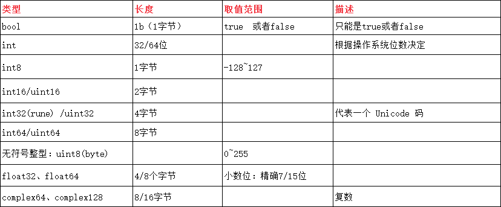

Go语言:是静态类型语言，因此变量（variable）是有明确类型的，编译器也会检查变量类型的正确性.

变量的声明：全局变量必须有关键字var
var name [type] 指定数据类型
var 是声明变量的关键字，name 是变量名，type 是变量的类型。
例如：var num_2 int = 10；var name; 不指定数据类型，由系统自己推断具体的数据类型
var dg = "str"var_name :=value 不指定数据类型，由系统自己推断具体的数据类型
dd := 1223批量声明：
var (
str_1 int
db float64
)
数据的默认值
当一个变量被声明之后，系统自动赋予它该类型的零值：int 为 0，float 为 0.0，bool 为 false，string 为空字符串，指针为 nil 等。所有的内存在 Go 中都是经过初始化的。
变量别名
type (
//给string类型起一个别名str
str string
//给float64类型起一个别名double
double float64
)
func main() {
//直接使用别名定义变量
var price double = 123.3435
std.Println(price)
var name str = "张三"
std.Println(name)
}
变量的类型转换
go语言不像java可以进行隐式转换，他必须显示的进行
bb := 12
fmt.Println("int 转 float32=", float32(bb)) //int 转 float32= 12
ff := 12.43
fmt.Println("float32 转 int=", int(ff)) //float32 转 int= 12
fmt.Println("int 转 string=", string(65)) //int 转 string= A
fmt.Println("字符 转 字符串=", string('z'))//字符 转 字符串= z
二、常量
常量的定义格式和变量的声明语法类似：const name [type] = value
const pi = 3.14159 // 相当于 math.Pi 的近似值批量定义
const (
e = 2.7182818
pi = 3.1415926
) iota 常量生成器
常量声明可以使用 iota 常量生成器初始化，它用于生成一组以相似规则初始化的常量，但是不用每行都写一遍初始化表达式。在一个 const 声明语句中，在第一个声明的常量所在的行，iota 将会被置为 0，然后在每一个有常量声明的行加一。
const (
Sunday = iota
Monday
Tuesday
Wednesday
Thursday
Friday
Saturday
)
func main() {
std.Println(Sunday)
std.Println(Monday)
std.Println(Tuesday)
std.Println(Wednesday)
std.Println(Thursday)
std.Println(Friday)
std.Println(Saturday)
}
结果：
0
1
2
3
4
5
6
二、语句：
//1、##################for#############
var fa int
for {
if fa > 10 {
std.Println("fa >10")
break
}
fa++
}
//2、##################for#############
var ffa int = 12
for ffa > 10 {
std.Println("ffa >10")
ffa--
}
//3、##################for#############
for i := 0; i < 3; i++ {
std.Println("for")
}var flag bool
if flag {
std.Println("=======true=======")
} else {
std.Println("=======false=========")
}
if a := 4; a > 1 {
std.Println(a)
}